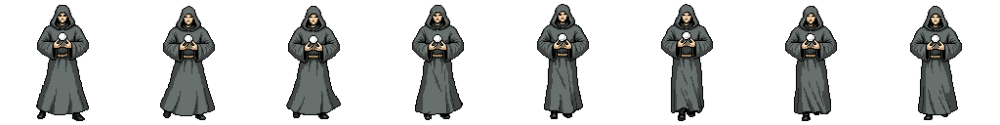
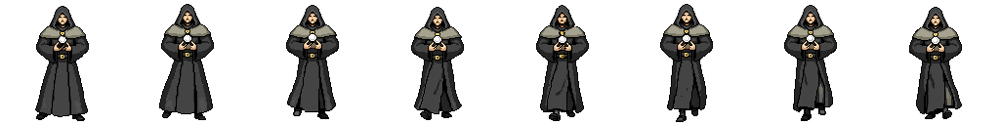
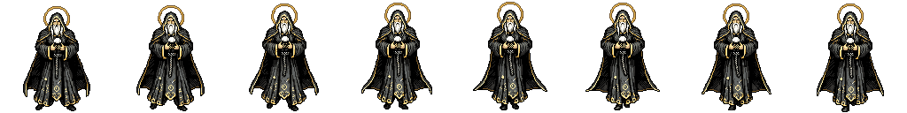
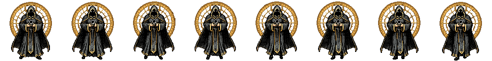
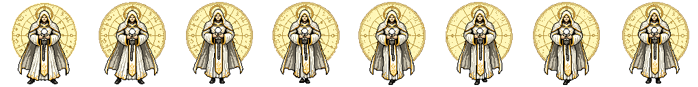

Avatar Neófito
Estágio 1 · 8 quadros

Estágio 1 · 8 quadros

Estágio 2 · 8 quadros

Estágio 3 · 8 quadros

Estágio 4 · 8 quadros

Estágio 5 · 8 quadros

Vista frontal · caminhada no lugar · PNG transparente 128 × 128 · renderização a 30 FPS